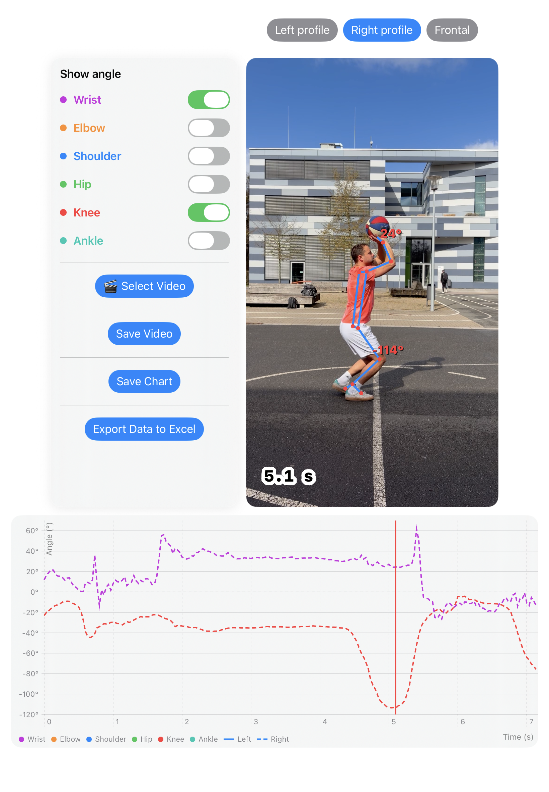
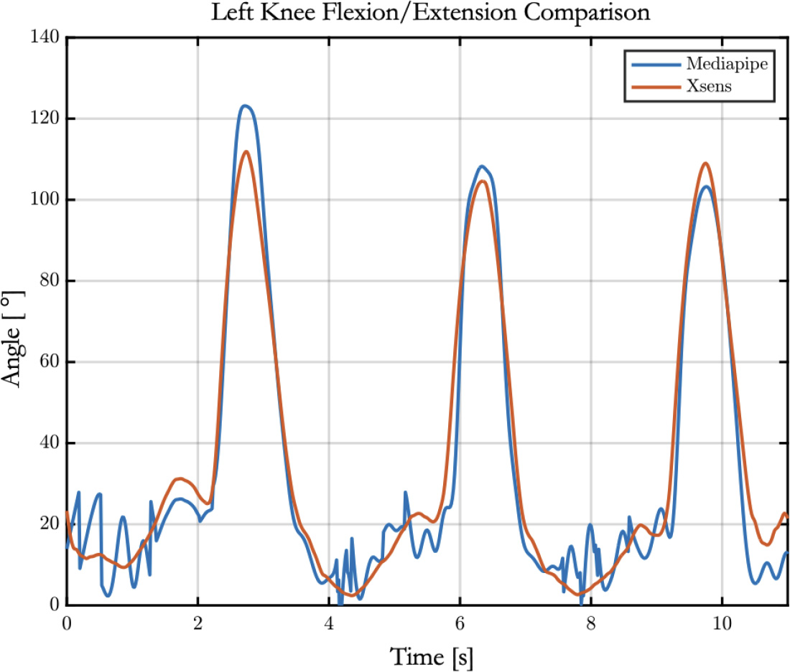

AngleUp ist eine App für den Breiten- und Schulsport, mit der die Gelenkwinkel bei sportlichen Bewegungen gemessen werden. Beispielsweise kann das Abklappen des Handgelenks und die Kniebeuge beim Basketballwurf aufgezeichnet werden. Die Bewegungsanalyse dient der Trainingsunterstützung und Technikverbesserung durch visuelles Feedback und qualitativen Messwerten.

Die Videoanalyse mit AngleUp bietet eine objektive und zugleich anschauliche Möglichkeit der Bewegungsbeobachtung. Sie unterstützt differenzierte Lernwege und fördert die kooperative Auseinandersetzung mit sportlichen Bewegungsabläufen. Im Sinne der Binnendifferenzierung ermöglicht die Methode, dass Schülerinnen und Schüler ihre Lernprozesse auf ihrem individuellen Leistungsniveau gestalten. Leistungsstärkere Lernende können sich auf feine technische Details konzentrieren, komplexe Bewegungszusammenhänge analysieren und ihre Feinkoordination gezielt weiterentwickeln. Leistungsschwächere Lernende profitieren hingegen besonders von der visuellen Rückmeldung: Sie können ihre Eigenwahrnehmung mit der äußeren Perspektive abgleichen und so ein besseres Verständnis für ihre Bewegungen entwickeln. Durch Funktionen wie Zeitlupe und die Messung von Gelenkwinkeln in Standbildern wird eine verlangsamte und präzisierte Analyse ermöglicht. Bewegungsmerkmale, die im realen Ablauf kaum wahrnehmbar sind, werden so sichtbar und gezielt bearbeitbar. Wird AngleUp im Rahmen kooperativer Lernformen - etwa im Lerntempoduett - eingesetzt, entsteht ein produktives Wechselspiel aus individueller Analyse und gemeinsamer Reflexion. In Partner- oder Kleingruppenarbeit untersuchen die Lernenden ihre Bewegungen, vergleichen diese mit Idealmodellen und entwickeln darauf aufbauend Hypothesen zur Optimierung. Dieser Austausch stärkt nicht nur die Fachkompetenz durch den gezielten Einsatz von Fachsprache, sondern fördert auch die Reflexionsfähigkeit sowie soziale Kompetenzen, insbesondere die Formulierung und Annahme von konstruktivem Feedback. Gleichzeitig erkennen die Schülerinnen und Schüler konkrete Ansatzpunkte, um ihre Bewegungsausführung eigenständig weiterzuentwickeln und praktisch zu verbessern.
AngleUp eignet sich zudem hervorragend zur Entwicklung von Funktionsphasenmodellen – einem zentralen Instrument der sportwissenschaftlichen Bewegungsanalyse. Im niedersächsischen Kerncurriculum Sport ist das Erstellen solcher Modelle ein verbindlicher Bestandteil der Qualifikationsphase. Durch die Gliederung einer Bewegung in klar abgegrenzte Teilphasen lassen sich komplexe motorische Abläufe systematisch untersuchen. Ziel ist es, grundlegende Bewegungsmerkmale zu identifizieren und gezielte Ansatzpunkte zur Technikoptimierung abzuleiten. Die strukturierte Beschreibung einzelner Phasen unterstützt die Schülerinnen und Schüler dabei, ihre eigenen Bewegungen differenziert wahrzunehmen und zentrale Technikmerkmale zu erkennen. In Kombination mit der videobasierten Analyse wird so ein besonders wirkungsvolles methodisches Werkzeug geschaffen, um Bewegungen gezielt zu verstehen und nachhaltig zu verbessern.
Das Framework der App wurde in einer Studie von Francia et al. (2024) mit dem etablierten System Xsens verglichen, das Gelenkwinkel mithilfe von Beschleunigungssensoren erfasst [1]. Die Ergebnisse zeigen, dass der Algorithmus Bewegungsverläufe über die Zeit realitätsnah und zuverlässig abbildet. Ein direkter Vergleich verdeutlicht die hohe Übereinstimmung beider Systeme am Beispiel einer Kniebeuge.

Für Bewegungen der unteren Extremitäten wurden nur geringe Abweichungen festgestellt (~ 16 %). Bei den oberen Extremitäten sind die Fehler etwas höher (~ 20 %), wobei die Schulterbewegung mit etwa 13° vergleichsweise präzise erfasst wird. Die Abweichungen lassen sich vor allem durch schnellere Bewegungen und mögliche Verdeckungen durch den Körper erklären. Die Korrelationskoeffizienten (r = 0,6-0,76) für die Gelenkwinkel der oberen bzw. unteren Extremitäten bestätigen insgesamt eine solide Übereinstimmung mit der Referenzmethode. Zudem zeigt sich das System als robust, da keine relevanten Unterschiede zwischen linker und rechter Körperseite festgestellt wurden. Insgesamt unterstreichen die Ergebnisse die Zuverlässigkeit des Algorithmus und sein großes Potenzial für den Einsatz in Analyse- und Trainingskontexten.